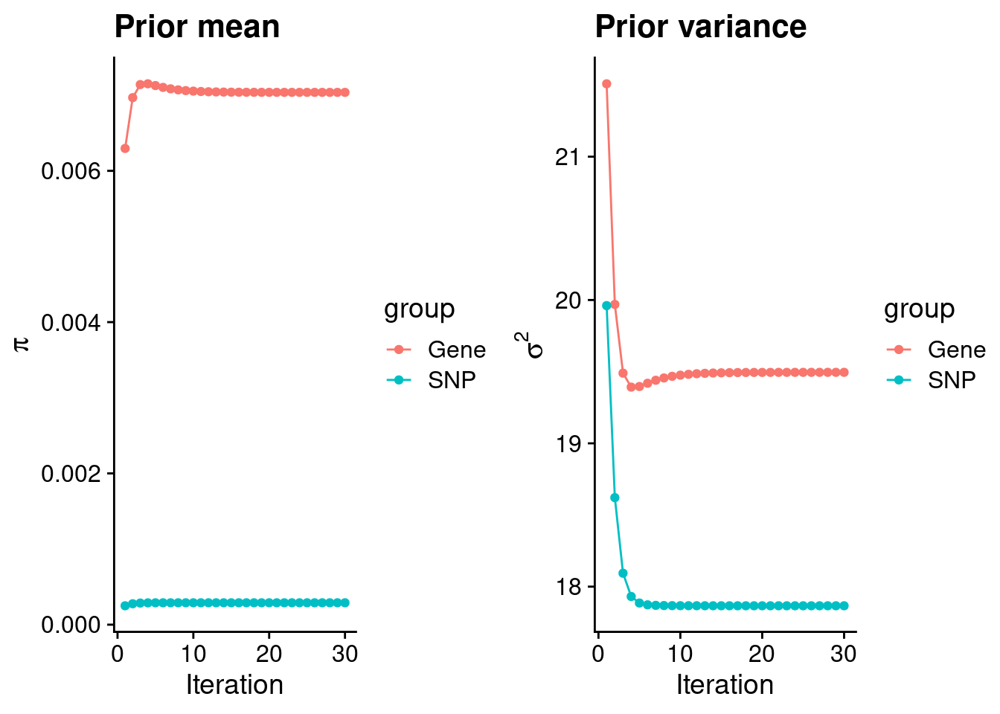
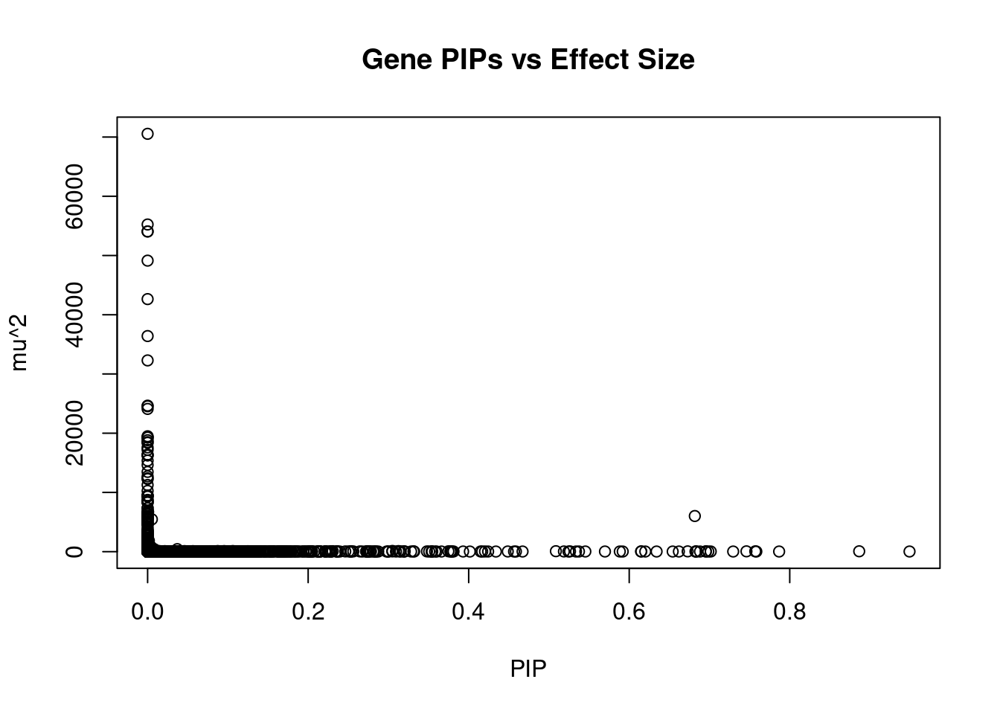
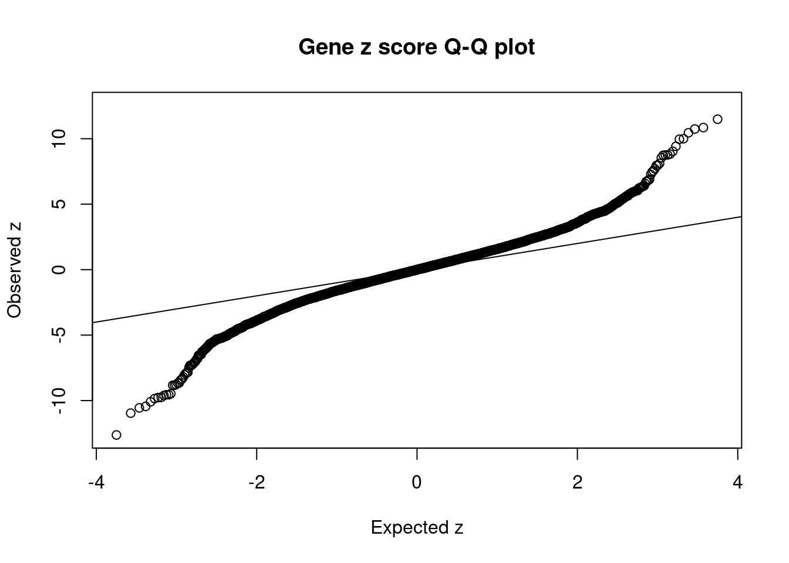
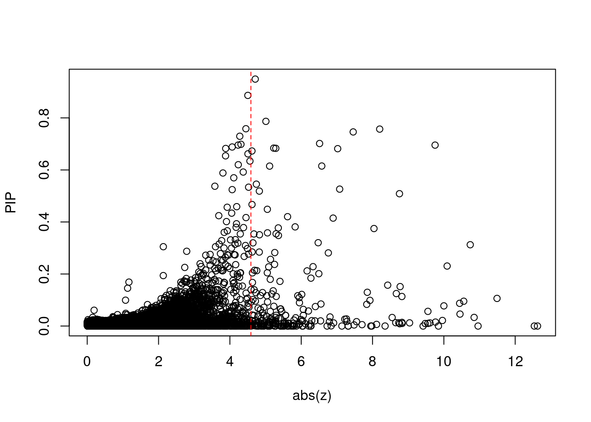
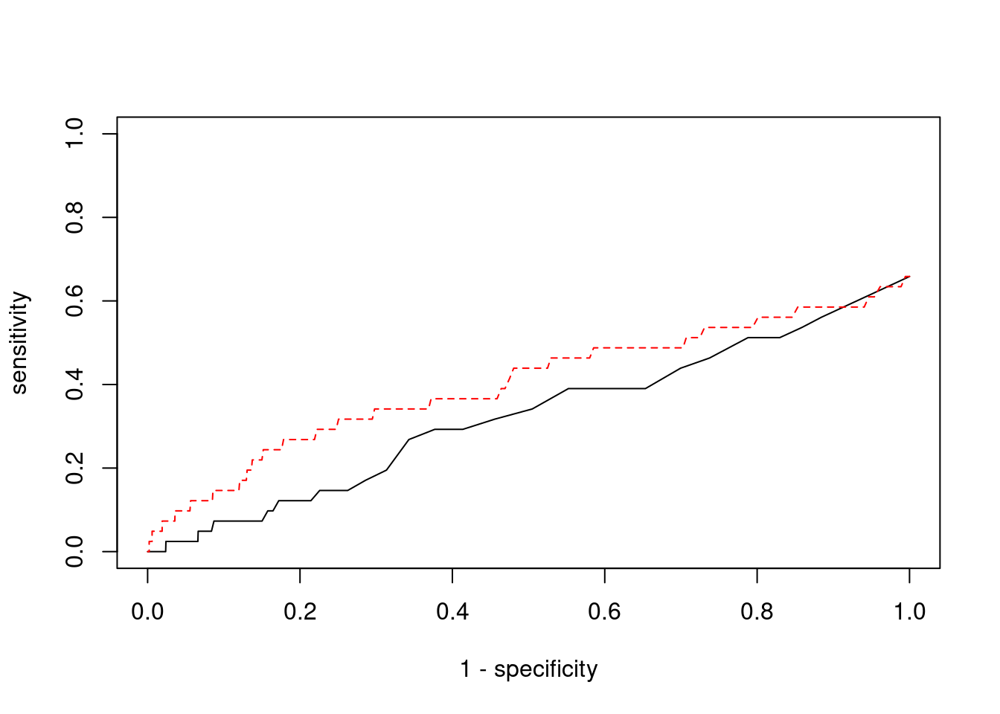

BMI - Brain Putamen basal ganglia
sheng Qian
2021-2-6
Last updated: 2022-02-13
Checks: 6 1
Knit directory: cTWAS_analysis/
This reproducible R Markdown analysis was created with workflowr (version 1.6.2). The Checks tab describes the reproducibility checks that were applied when the results were created. The Past versions tab lists the development history.
Great! Since the R Markdown file has been committed to the Git repository, you know the exact version of the code that produced these results.
Great job! The global environment was empty. Objects defined in the global environment can affect the analysis in your R Markdown file in unknown ways. For reproduciblity it’s best to always run the code in an empty environment.
The command set.seed(20211220) was run prior to running the code in the R Markdown file. Setting a seed ensures that any results that rely on randomness, e.g. subsampling or permutations, are reproducible.
Great job! Recording the operating system, R version, and package versions is critical for reproducibility.
Nice! There were no cached chunks for this analysis, so you can be confident that you successfully produced the results during this run.
Using absolute paths to the files within your workflowr project makes it difficult for you and others to run your code on a different machine. Change the absolute path(s) below to the suggested relative path(s) to make your code more reproducible.
| absolute | relative |
|---|---|
| /project2/xinhe/shengqian/cTWAS/cTWAS_analysis/data/ | data |
| /project2/xinhe/shengqian/cTWAS/cTWAS_analysis/code/ctwas_config.R | code/ctwas_config.R |
Great! You are using Git for version control. Tracking code development and connecting the code version to the results is critical for reproducibility.
The results in this page were generated with repository version eb13ecf. See the Past versions tab to see a history of the changes made to the R Markdown and HTML files.
Note that you need to be careful to ensure that all relevant files for the analysis have been committed to Git prior to generating the results (you can use wflow_publish or wflow_git_commit). workflowr only checks the R Markdown file, but you know if there are other scripts or data files that it depends on. Below is the status of the Git repository when the results were generated:
Ignored files:
Ignored: .ipynb_checkpoints/
Untracked files:
Untracked: code/.ipynb_checkpoints/
Untracked: code/AF_out/
Untracked: code/BMI_out/
Untracked: code/T2D_out/
Untracked: code/ctwas_config.R
Untracked: code/mapping.R
Untracked: code/out/
Untracked: code/run_AF_analysis.sbatch
Untracked: code/run_AF_analysis.sh
Untracked: code/run_AF_ctwas_rss_LDR.R
Untracked: code/run_BMI_analysis.sbatch
Untracked: code/run_BMI_analysis.sh
Untracked: code/run_BMI_ctwas_rss_LDR.R
Untracked: code/run_T2D_analysis.sbatch
Untracked: code/run_T2D_analysis.sh
Untracked: code/run_T2D_ctwas_rss_LDR.R
Untracked: data/.ipynb_checkpoints/
Untracked: data/AF/
Untracked: data/BMI/
Untracked: data/T2D/
Untracked: data/UKBB/
Untracked: data/UKBB_SNPs_Info.text
Untracked: data/gene_OMIM.txt
Untracked: data/gene_pip_0.8.txt
Untracked: data/mashr_Heart_Atrial_Appendage.db
Untracked: data/summary_known_genes_annotations.xlsx
Untracked: data/untitled.txt
Note that any generated files, e.g. HTML, png, CSS, etc., are not included in this status report because it is ok for generated content to have uncommitted changes.
These are the previous versions of the repository in which changes were made to the R Markdown (analysis/BMI_Brain_Putamen_basal_ganglia.Rmd) and HTML (docs/BMI_Brain_Putamen_basal_ganglia.html) files. If you’ve configured a remote Git repository (see ?wflow_git_remote), click on the hyperlinks in the table below to view the files as they were in that past version.
| File | Version | Author | Date | Message |
|---|---|---|---|---|
| Rmd | eb13ecf | sq-96 | 2022-02-13 | update |
| html | e6bc169 | sq-96 | 2022-02-13 | Build site. |
| Rmd | 87fee8b | sq-96 | 2022-02-13 | update |
Weight QC
[1] 11258
1 2 3 4 5 6 7 8 9 10 11 12 13 14 15 16
1123 787 660 445 518 661 554 400 415 452 668 611 225 384 383 517
17 18 19 20 21 22
686 178 855 348 121 267 [1] 8841[1] 0.7853082Load ctwas results
Check convergence of parameters
********************************************************Note: As of version 1.0.0, cowplot does not change the default ggplot2 theme anymore. To recover the previous behavior, execute:
theme_set(theme_cowplot())********************************************************
| Version | Author | Date |
|---|---|---|
| e6bc169 | sq-96 | 2022-02-13 |
gene snp
0.0070376442 0.0002893198 gene snp
19.49534 17.86647 [1] 336107[1] 11258 7535010 gene snp
0.004595595 0.115883934 [1] 0.02674325 16.29002096Genes with highest PIPs

| Version | Author | Date |
|---|---|---|
| e6bc169 | sq-96 | 2022-02-13 |
genename region_tag susie_pip mu2 PVE z
10175 ATP6V0C 16_2 0.9492272 26.58239 7.507348e-05 -4.711275
13394 NOL12 22_15 0.8865271 62.62495 1.651817e-04 -4.503546
241 ISL1 5_30 0.7867695 24.87913 5.823782e-05 5.009605
5250 FGD4 12_22 0.7583742 23.50930 5.304515e-05 4.449335
8817 EFEMP2 11_36 0.7570112 52.91435 1.191786e-04 -8.200649
5487 C18orf8 18_12 0.7460609 53.48811 1.187282e-04 7.457838
9562 ZADH2 18_44 0.7295197 22.99406 4.990857e-05 4.277726
13411 HIST1H2BE 6_20 0.7015820 28.99428 6.052200e-05 -6.515410
11599 FADS3 11_34 0.6985577 25.36393 5.271585e-05 4.310860
8733 RNASEH1 2_2 0.6954897 26.12022 5.404929e-05 4.231321
10490 SKOR1 15_31 0.6954435 54.86076 1.135131e-04 -9.753990
9657 TRAPPC5 19_7 0.6882072 25.48245 5.217744e-05 4.064629
12847 LINC01977 17_45 0.6839242 28.28519 5.755586e-05 5.229978
5878 ECE2 3_113 0.6830958 30.11280 6.120053e-05 -5.287344
666 CACNB1 17_23 0.6825119 24.79597 5.035167e-05 3.882799
9431 ERBB4 2_125 0.6817327 6016.69012 1.220378e-02 -7.022927
368 PHLPP2 16_38 0.6728139 49.57018 9.922884e-05 4.618775
12529 AP006621.5 11_1 0.6618910 25.40035 5.002058e-05 -4.506344
309 VRK2 2_38 0.6541699 22.95548 4.467858e-05 3.878757
6637 FBXL18 7_7 0.6341008 24.60487 4.641965e-05 -4.562143
num_eqtl
10175 1
13394 2
241 1
5250 2
8817 1
5487 2
9562 1
13411 1
11599 1
8733 2
10490 1
9657 2
12847 1
5878 1
666 1
9431 1
368 1
12529 1
309 2
6637 2Genes with largest effect sizes

| Version | Author | Date |
|---|---|---|
| e6bc169 | sq-96 | 2022-02-13 |
genename region_tag susie_pip mu2 PVE z num_eqtl
10436 SLC38A3 3_35 0 70544.92 0 6.725828 1
7563 CAMKV 3_35 0 55235.03 0 -9.847856 1
7741 PSIP1 9_13 0 54060.94 0 7.950925 1
7742 CCDC171 9_13 0 54049.48 0 7.979137 1
2148 PIK3R2 19_14 0 49132.99 0 -7.140312 1
36 RBM6 3_35 0 42639.01 0 12.536042 1
7565 MST1R 3_35 0 36399.62 0 -12.626367 2
9443 STX19 3_59 0 32287.55 0 -5.059656 1
5360 MFAP1 15_16 0 24650.32 0 4.302998 1
12170 HYPK 15_16 0 24544.15 0 4.322039 1
7560 RNF123 3_35 0 24100.49 0 -10.959165 1
5186 TMOD3 15_21 0 19481.65 0 -5.411998 1
3086 PLCL1 2_117 0 19300.27 0 -5.641781 1
5884 CENPC 4_47 0 19277.32 0 5.863420 2
12210 NAT6 3_35 0 18819.99 0 -6.264379 2
7603 RNF180 5_39 0 18492.47 0 -3.745040 2
7962 LEO1 15_21 0 18380.03 0 2.536419 2
5088 TUBGCP4 15_16 0 17595.20 0 3.371262 1
1042 CCNT2 2_80 0 17195.89 0 4.382104 2
1422 MAST3 19_14 0 16400.99 0 2.208055 1Genes with highest PVE
genename region_tag susie_pip mu2 PVE z
9431 ERBB4 2_125 0.681732730 6016.69012 1.220378e-02 -7.022927
13394 NOL12 22_15 0.886527055 62.62495 1.651817e-04 -4.503546
8817 EFEMP2 11_36 0.757011205 52.91435 1.191786e-04 -8.200649
6710 GPR61 1_67 0.508657551 78.52865 1.188437e-04 8.755235
5487 C18orf8 18_12 0.746060868 53.48811 1.187282e-04 7.457838
10490 SKOR1 15_31 0.695443457 54.86076 1.135131e-04 -9.753990
5219 G3BP2 4_51 0.304950389 123.45259 1.120087e-04 -2.133639
368 PHLPP2 16_38 0.672813922 49.57018 9.922884e-05 4.618775
12412 RP11-1348G14.4 16_23 0.312488471 102.15083 9.497260e-05 10.739762
13154 CTC-498M16.4 5_52 0.005306193 5461.35404 8.621956e-05 7.705884
12235 GS1-259H13.2 7_62 0.526230759 50.82262 7.957116e-05 -7.078494
7903 TRMT61A 14_54 0.615046084 41.71159 7.632852e-05 6.576195
10175 ATP6V0C 16_2 0.949227183 26.58239 7.507348e-05 -4.711275
9806 KCNB2 8_53 0.374727085 62.18892 6.933469e-05 -8.040680
4200 NECTIN2 19_31 0.614744423 33.79010 6.180257e-05 5.114458
5878 ECE2 3_113 0.683095778 30.11280 6.120053e-05 -5.287344
13411 HIST1H2BE 6_20 0.701581995 28.99428 6.052200e-05 -6.515410
241 ISL1 5_30 0.786769522 24.87913 5.823782e-05 5.009605
12847 LINC01977 17_45 0.683924241 28.28519 5.755586e-05 5.229978
8100 ZNF646 16_24 0.230618059 79.69879 5.468490e-05 -10.091573
num_eqtl
9431 1
13394 2
8817 1
6710 1
5487 2
10490 1
5219 1
368 1
12412 1
13154 1
12235 1
7903 2
10175 1
9806 2
4200 1
5878 1
13411 1
241 1
12847 1
8100 1Genes with largest z scores
genename region_tag susie_pip mu2 PVE
7565 MST1R 3_35 0.000000e+00 36399.62345 0.000000e+00
36 RBM6 3_35 0.000000e+00 42639.00969 0.000000e+00
9065 KCTD13 16_24 1.061605e-01 110.12352 3.478287e-05
7560 RNF123 3_35 0.000000e+00 24100.48881 0.000000e+00
8425 INO80E 16_24 3.311897e-02 96.96976 9.555106e-06
12412 RP11-1348G14.4 16_23 3.124885e-01 102.15083 9.497260e-05
10750 SULT1A2 16_23 9.533287e-02 104.70613 2.969868e-05
10461 CLN3 16_23 4.595009e-02 99.78776 1.364225e-05
9180 NUPR1 16_23 8.732093e-02 109.53928 2.845841e-05
8100 ZNF646 16_24 2.306181e-01 79.69879 5.468490e-05
8099 ZNF668 16_24 7.753223e-02 77.15577 1.779808e-05
8773 C1QTNF4 11_29 2.139486e-02 94.04749 5.986584e-06
7563 CAMKV 3_35 0.000000e+00 55235.02565 0.000000e+00
454 PRSS8 16_24 1.517082e-02 71.96813 3.248417e-06
10490 SKOR1 15_31 6.954435e-01 54.86076 1.135131e-04
11425 NDUFS3 11_29 1.196307e-02 84.07778 2.992584e-06
11430 LAT 16_23 5.639435e-02 95.10470 1.595732e-05
2537 MTCH2 11_29 1.004862e-02 83.11342 2.484848e-06
10677 FAM180B 11_29 9.652710e-03 82.29183 2.363352e-06
12260 LINC00461 5_52 4.936818e-11 348.09538 5.112906e-14
z num_eqtl
7565 -12.626367 2
36 12.536042 1
9065 11.490673 1
7560 -10.959165 1
8425 10.848720 2
12412 10.739762 1
10750 -10.557202 2
10461 10.452595 1
9180 -10.442210 2
8100 -10.091573 1
8099 10.000364 1
8773 9.960054 2
7563 -9.847856 1
454 -9.764760 1
10490 -9.753990 1
11425 -9.609332 2
11430 -9.552834 1
2537 -9.551496 1
10677 -9.476802 2
12260 9.418048 1Comparing z scores and PIPs

| Version | Author | Date |
|---|---|---|
| e6bc169 | sq-96 | 2022-02-13 |

| Version | Author | Date |
|---|---|---|
| e6bc169 | sq-96 | 2022-02-13 |
[1] 0.02149583 genename region_tag susie_pip mu2 PVE
7565 MST1R 3_35 0.000000e+00 36399.62345 0.000000e+00
36 RBM6 3_35 0.000000e+00 42639.00969 0.000000e+00
9065 KCTD13 16_24 1.061605e-01 110.12352 3.478287e-05
7560 RNF123 3_35 0.000000e+00 24100.48881 0.000000e+00
8425 INO80E 16_24 3.311897e-02 96.96976 9.555106e-06
12412 RP11-1348G14.4 16_23 3.124885e-01 102.15083 9.497260e-05
10750 SULT1A2 16_23 9.533287e-02 104.70613 2.969868e-05
10461 CLN3 16_23 4.595009e-02 99.78776 1.364225e-05
9180 NUPR1 16_23 8.732093e-02 109.53928 2.845841e-05
8100 ZNF646 16_24 2.306181e-01 79.69879 5.468490e-05
8099 ZNF668 16_24 7.753223e-02 77.15577 1.779808e-05
8773 C1QTNF4 11_29 2.139486e-02 94.04749 5.986584e-06
7563 CAMKV 3_35 0.000000e+00 55235.02565 0.000000e+00
454 PRSS8 16_24 1.517082e-02 71.96813 3.248417e-06
10490 SKOR1 15_31 6.954435e-01 54.86076 1.135131e-04
11425 NDUFS3 11_29 1.196307e-02 84.07778 2.992584e-06
11430 LAT 16_23 5.639435e-02 95.10470 1.595732e-05
2537 MTCH2 11_29 1.004862e-02 83.11342 2.484848e-06
10677 FAM180B 11_29 9.652710e-03 82.29183 2.363352e-06
12260 LINC00461 5_52 4.936818e-11 348.09538 5.112906e-14
z num_eqtl
7565 -12.626367 2
36 12.536042 1
9065 11.490673 1
7560 -10.959165 1
8425 10.848720 2
12412 10.739762 1
10750 -10.557202 2
10461 10.452595 1
9180 -10.442210 2
8100 -10.091573 1
8099 10.000364 1
8773 9.960054 2
7563 -9.847856 1
454 -9.764760 1
10490 -9.753990 1
11425 -9.609332 2
11430 -9.552834 1
2537 -9.551496 1
10677 -9.476802 2
12260 9.418048 1Sensitivity, specificity and precision for silver standard genes
[1] 41[1] 27[1] 4.589585[1] 2[1] 242 genename region_tag susie_pip mu2 PVE z num_eqtl
13394 NOL12 22_15 0.8865271 62.62495 0.0001651817 -4.503546 2 ctwas TWAS
0.00000000 0.07317073 ctwas TWAS
0.9998219 0.9787196 ctwas TWAS
0.00000000 0.01239669 
| Version | Author | Date |
|---|---|---|
| e6bc169 | sq-96 | 2022-02-13 |
sessionInfo()R version 3.6.1 (2019-07-05)
Platform: x86_64-pc-linux-gnu (64-bit)
Running under: Scientific Linux 7.4 (Nitrogen)
Matrix products: default
BLAS/LAPACK: /software/openblas-0.2.19-el7-x86_64/lib/libopenblas_haswellp-r0.2.19.so
locale:
[1] LC_CTYPE=en_US.UTF-8 LC_NUMERIC=C
[3] LC_TIME=en_US.UTF-8 LC_COLLATE=en_US.UTF-8
[5] LC_MONETARY=en_US.UTF-8 LC_MESSAGES=en_US.UTF-8
[7] LC_PAPER=en_US.UTF-8 LC_NAME=C
[9] LC_ADDRESS=C LC_TELEPHONE=C
[11] LC_MEASUREMENT=en_US.UTF-8 LC_IDENTIFICATION=C
attached base packages:
[1] stats graphics grDevices utils datasets methods base
other attached packages:
[1] readxl_1.3.1 cowplot_1.0.0 ggplot2_3.3.5 workflowr_1.6.2
loaded via a namespace (and not attached):
[1] tidyselect_1.1.1 xfun_0.29 purrr_0.3.4 colorspace_2.0-2
[5] vctrs_0.3.8 generics_0.1.1 htmltools_0.5.2 yaml_2.2.1
[9] utf8_1.2.2 blob_1.2.2 rlang_0.4.12 jquerylib_0.1.4
[13] later_0.8.0 pillar_1.6.4 glue_1.5.1 withr_2.4.3
[17] DBI_1.1.1 bit64_4.0.5 lifecycle_1.0.1 stringr_1.4.0
[21] cellranger_1.1.0 munsell_0.5.0 gtable_0.3.0 evaluate_0.14
[25] memoise_2.0.1 labeling_0.4.2 knitr_1.36 fastmap_1.1.0
[29] httpuv_1.5.1 fansi_0.5.0 highr_0.9 Rcpp_1.0.7
[33] promises_1.0.1 scales_1.1.1 cachem_1.0.6 farver_2.1.0
[37] fs_1.5.2 bit_4.0.4 digest_0.6.29 stringi_1.7.6
[41] dplyr_1.0.7 rprojroot_2.0.2 grid_3.6.1 tools_3.6.1
[45] magrittr_2.0.1 tibble_3.1.6 RSQLite_2.2.8 crayon_1.4.2
[49] whisker_0.3-2 pkgconfig_2.0.3 ellipsis_0.3.2 data.table_1.14.2
[53] assertthat_0.2.1 rmarkdown_2.11 R6_2.5.1 git2r_0.26.1
[57] compiler_3.6.1